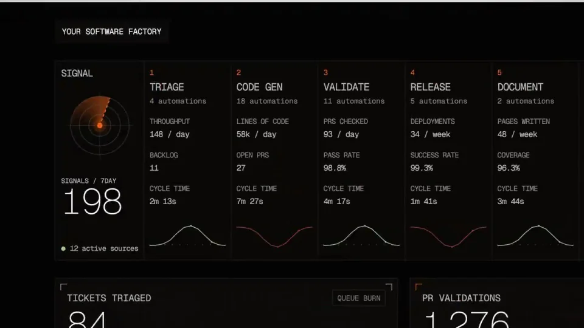
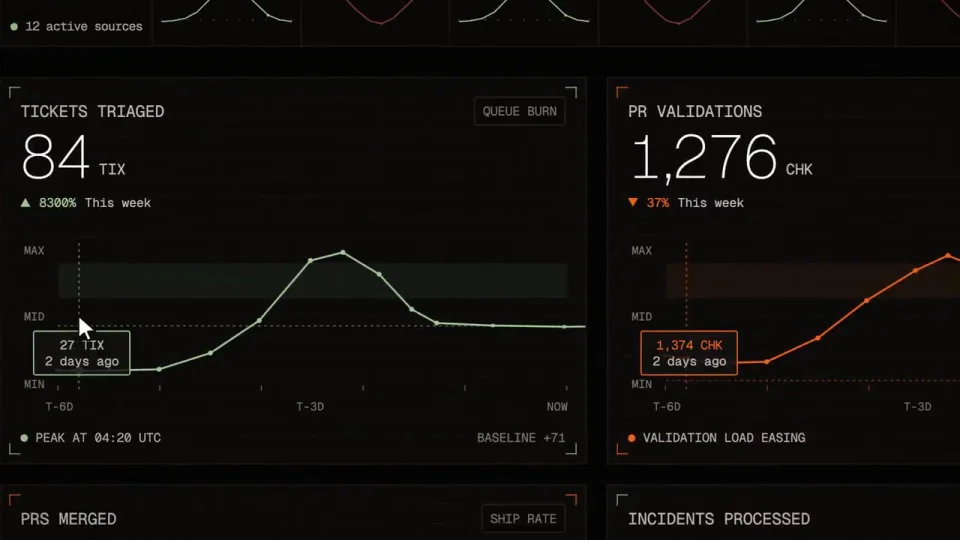

Factory / V185
Factory｜2.0 发布
先把软件生产拆成一组工序，再进入同样顺序的指标工作台。开场的工序词必须在后面的真实界面里找到对应。
构图与编排 可播放 · 可替换内容
整体编排规则示例
查看 HTML 源码
<!doctype html><html lang="zh-CN"><meta charset="utf-8"><meta name="viewport" content="width=device-width,initial-scale=1"><title>Factory｜2.0 发布 · sequence</title><style>html,body{margin:0;width:100%;height:100%;overflow:hidden;background:#f4f3ef}canvas{display:block;width:100%;height:100%;object-fit:contain}</style><body data-mode="sequence"><canvas width="1000" height="600"></canvas><script src="data.js"></script><script src="common.js"></script><script src="scene.js"></script><script src="bridge.js"></script></body></html>画面元素工序标签机械拼贴大字斜线花标流程列折线图游标
MOTION LANGUAGE
动作与构图
局部动作 · 构图规则
01
工序串联开场素材
输入与输出固定在两端，计划、分诊、编写、测试、审查和交付置于中间。机械与颗粒纹理在标签下面快切，标签方向保持一致。
02
主张用粗字与短促错码
主张用粗字与短促错码规则示例
查看 HTML 源码
<!doctype html><html lang="zh-CN"><meta charset="utf-8"><meta name="viewport" content="width=device-width,initial-scale=1"><title>Factory｜2.0 发布 · sequence</title><style>html,body{margin:0;width:100%;height:100%;overflow:hidden;background:#f4f3ef}canvas{display:block;width:100%;height:100%;object-fit:contain}</style><body data-mode="clip" data-start="3" data-end="10"><canvas width="1000" height="600"></canvas><script src="data.js"></script><script src="common.js"></script><script src="scene.js"></script><script src="bridge.js"></script></body></html>黑白底交替，橙色只点亮关键词或标志。错码只发生在字词入场的短瞬间，落定后必须读清，不让噪点持续覆盖正文。
03
从工序词进入可比较指标
从工序词进入可比较指标规则示例
查看 HTML 源码
<!doctype html><html lang="zh-CN"><meta charset="utf-8"><meta name="viewport" content="width=device-width,initial-scale=1"><title>Factory｜2.0 发布 · sequence</title><style>html,body{margin:0;width:100%;height:100%;overflow:hidden;background:#f4f3ef}canvas{display:block;width:100%;height:100%;object-fit:contain}</style><body data-mode="clip" data-start="16" data-end="25"><canvas width="1000" height="600"></canvas><script src="data.js"></script><script src="common.js"></script><script src="scene.js"></script><script src="bridge.js"></script></body></html>工作台按阶段分列，先展示完整宽表，再推近两三个折线指标。游标出现时显示对应数值，结束拉回总览，保持各列顺序不变。
04
更换业务时先重写工序
准备可对应的阶段名称、指标与结果。图表保留相同数据方向和单位，不把工序标签当作随机装饰；大片白底与深色控制台继续形成反差。
SEQUENCE
段落与节奏
点击段落，定位到上方编排示意。


画面参考 · 离散静帧
KEEP THE RELATIONSHIPS
制作其他主题
- 替换生产流程与指标；保留工序词→工作台→局部指标→总览。
制作约束
工序标签 / 机械拼贴 / 大字 / 斜线花标 / 流程列 / 折线图 / 游标
- 输入与输出固定在两端，计划、分诊、编写、测试、审查和交付置于中间。机械与颗粒纹理在标签下面快切，标签方向保持一致。
- 黑白底交替，橙色只点亮关键词或标志。错码只发生在字词入场的短瞬间，落定后必须读清，不让噪点持续覆盖正文。
- 工作台按阶段分列，先展示完整宽表，再推近两三个折线指标。游标出现时显示对应数值，结束拉回总览，保持各列顺序不变。
- 准备可对应的阶段名称、指标与结果。图表保留相同数据方向和单位，不把工序标签当作随机装饰；大片白底与深色控制台继续形成反差。